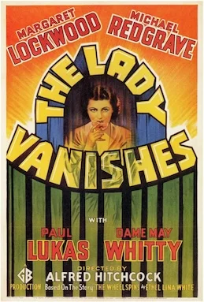
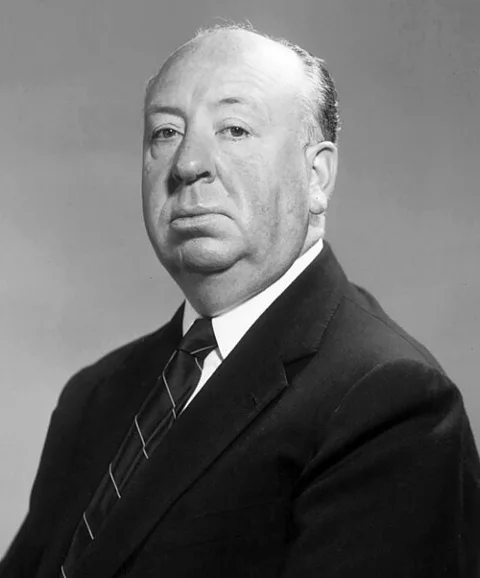
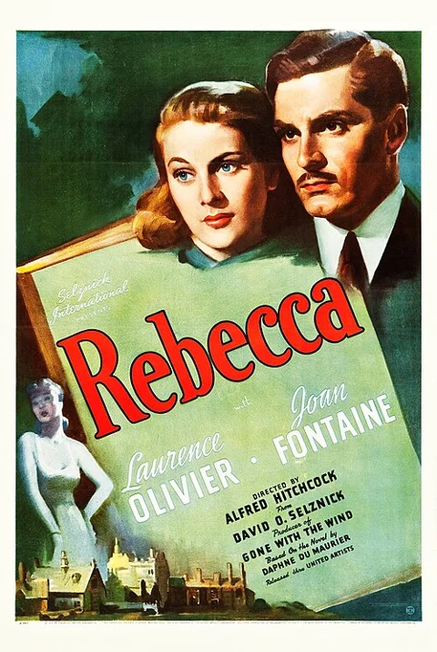
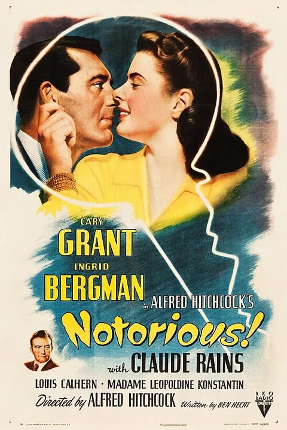
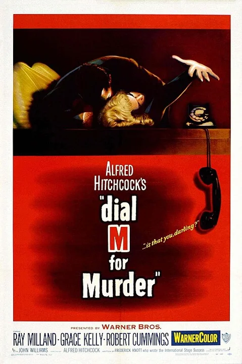
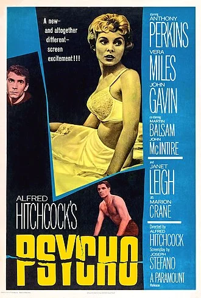

Explore film ↗The Lady Vanishes
Alfred Hitchcock
DIRECTOR PROFILE
Sir Alfred Joseph Hitchcock (13 August 1899 – 29 April 1980) was an English filmmaker.

LIFE & CAREER
Sir Alfred Joseph Hitchcock (13 August 1899 – 29 April 1980) was an English filmmaker. He is widely regarded as one of the greatest and most influential figures in the history of cinema. In a career spanning six decades, he directed over 50 feature films, many of which are still widely watched and studied today.
Adapted excerpt from Wikipedia, CC BY-SA 4.0. Pronunciation notes omitted.
Read the full biographyImage: Ante Brkan. Source & rights: Public domain ↗.
Profile reference: Director background ↗
Open this director checklist ↗
A selection of this director’s films available in the archive.

Explore film ↗Alfred Hitchcock
 Explore film ↗
Explore film ↗Alfred Hitchcock

Explore film ↗Alfred Hitchcock

Explore film ↗Alfred Hitchcock

Explore film ↗Alfred Hitchcock

Explore film ↗Alfred Hitchcock
 Explore film ↗
Explore film ↗Alfred Hitchcock

1958 · Alfred Hitchcock